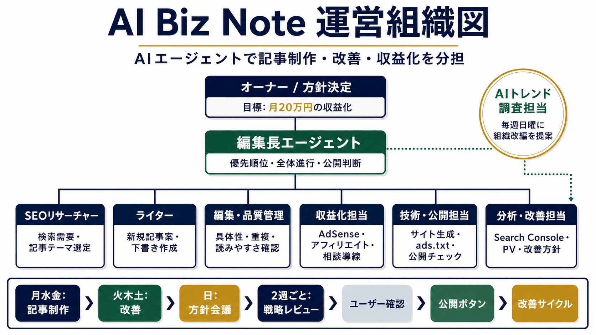

AIエージェントで事業メディア運営を会社のように回す方法
- 投稿日
- 更新日
AI Biz Note自身の運営例をもとに、ニュース収集、記事制作、改善、収益化、トレンド調査、相談導線をAIエージェントで分担する考え方を整理します。

AIで作るだけでなく、AIで運営する段階へ
AI活用というと、記事の下書きや画像作成だけを思い浮かべるかもしれません。しかし事業メディアや収益化プロジェクトで本当に効くのは、作成、確認、公開、分析、改善までを一つの運営サイクルにすることです。AI Biz Noteでは、記事を書くAIだけでなく、SEOを見るAI、品質を確認するAI、収益化を考えるAI、技術面を確認するAIを分け、会社の部署のように動かす形を試しています。
AI Biz Noteの現在の運営組織
現在は、編集長エージェントが全体方針を決め、SEOリサーチャーが検索需要を見て、ライターが記事案と下書きを作ります。編集・品質管理は具体性や重複を確認し、収益化担当はAdSense、相談導線、note販売のつながりを見ます。技術・公開担当はサイト生成やads.txt、公開前チェックを担当し、分析・改善担当はSearch ConsoleやPVを見ながら次の改善を考えます。さらに毎週、AIトレンド調査担当が新しい技術や需要を確認し、実行管理エージェントがレポートを今日やること、今週やること、保留すること、次回確認することへ分解します。
曜日ごとに担当を切り替える
運営を続けるには、毎日すべてを考えようとしないことが大切です。AI Biz Noteでは、月曜・水曜・金曜を記事制作の日、火曜・木曜・土曜を改善と収益化の日、日曜を方針会議の日としています。日曜にはAIトレンドも確認し、必要であれば新しい担当を追加します。そこで出た分析は、実行管理エージェントが翌週の作業に変換します。分析して終わりにせず、今日やること、今週やること、保留することを分けることで、運営が止まりにくくなります。
人間が見る場所を残す
AIエージェント運営で大事なのは、すべてを自動で公開しないことです。記事案、改善案、収益化案はAIが出しますが、公開判断、事業方針、広告や相談導線の扱いは人間が確認します。特にAdSense審査中や、読者の信頼に関わる内容では、自動化よりも安全な確認が重要です。AIに任せる範囲と、人間が決める範囲を分けることで、スピードと品質の両方を守りやすくなります。
具体的な利用シーン
事業者がAIエージェントで自動化できる仕事一覧を実務で考えるときは、まず「誰が、どの場面で、何に迷っているか」まで落とし込みます。たとえば問い合わせ返信、記事構成、FAQ整理、見積もり前のヒアリング、社内メモの要約のような接点で、読者やお客様が止まりやすい場所を一つ選びます。そこに対して、説明、比較、手順、よくある不安を順番に用意すると、単なる一般論ではなく、実際に使える内容になります。AIエージェント 事業者 活用というテーマでも、最初から大きく広げず、今日直せる一場面に絞ることが大切です。
最初の一時間でやること
最初にやることは大がかりな設計ではありません。過去のメールやメモを十件だけ集め、よく出る言い回しと確認が必要な条件を抜き出します。そのうえで、いま使っている文章、フォーム、ページ、投稿、メモの中から材料を集めます。材料がある状態でAIや改善作業を使うと、出てくる案が現場に近づきます。何も渡さずに「良い感じにして」と依頼するより、現状、目的、避けたい表現、希望する行動を渡したほうが、修正回数を減らせます。
よくある失敗と避け方
よくある失敗は、AIに丸投げして、確認基準を後から考えることです。便利に見えても、言い切りすぎ、古い情報、事業のトーンと違う文章が混ざると信頼を落とします。避けるには、最初に「今回は何を良くしたいのか」を一つだけ決めます。問い合わせを増やしたいのか、説明時間を減らしたいのか、検索から見つけてもらいたいのかで、書く内容も見る数字も変わります。目的が一つなら、改善後に振り返る基準も明確になります。
確認チェックリスト
公開前や運用前には、1つ目は依頼文に目的が入っているか、2つ目は使ってはいけない表現を指定したか、3つ目は人が確認する条件を決めたか、4つ目は出力形式を固定したかを確認します。チェックリストは多すぎると使われなくなるため、最初は四つ程度で十分です。慣れてきたら、実際に起きた問い合わせ、離脱、手戻りをもとに項目を入れ替えます。現場の確認項目として残すことで、次回以降の改善が速くなります。
小さく試して数字を見る
改善したら、すぐに大きな成果を求めるのではなく、二週間から一か月ほど小さく様子を見ます。見る数字は、ページ閲覧数、クリック数、問い合わせ数、返信にかかった時間、手直し回数などで十分です。数字が少なくても、問い合わせ内容が具体的になった、説明の往復が減った、迷う時間が短くなったなら前進です。小さな変化を記録しておくと、次にどこを直すべきか判断しやすくなります。
次に広げるなら
一つのテーマで効果が見えたら、同じ型を隣の作業へ広げます。記事なら関連テーマへ、LPなら別の導線へ、AI活用なら別の定型業務へ展開します。大事なのは、毎回ゼロから考え直さないことです。うまくいった見出し、依頼文、チェック項目を残しておくと、次の改善は短い時間で始められます。こうして型を増やすほど、サイトや業務全体の品質が安定していきます。
実務補足：判断基準を残す
事業者がAIエージェントで自動化できる仕事一覧で得た判断基準は、記事の中だけで終わらせず、社内メモやチェック表にも残しておくと使い回しやすくなります。どの条件なら進めるのか、どの条件なら人が確認するのか、どの数字を見て改善するのかを書いておくと、次回の作業が属人的になりません。成長を狙う事業ほど、こうした判断基準の保存が後から効いてきます。
実務で定着させるコツ
事業者がAIエージェントで自動化できる仕事一覧をさらに実務に落とし込むなら、記事を読んだ直後に一つだけ行動を決めることが大切です。たとえば、過去の問い合わせを三件見返す、ページの冒頭をスマホで確認する、Search Consoleで表示回数のある記事を一つ選ぶ、AIに渡す依頼文を一つ保存する、といった小さな作業で十分です。行動を小さくすると、改善が止まりにくくなります。次に同じテーマを扱うときは、今回の結果を見ながら、うまくいった点、迷った点、追加で必要になった情報を追記します。記事や業務は一度で完成させるより、使いながら具体化していくほうが現実的です。
Next Step
この記事を実務に落とし込みたいときは
AI活用、記事構成、LP改善、問い合わせ導線の整理など、状況に合わせて小さく相談できます。現在のサイトURLや困っていることが分かる範囲であれば、相談フォームから送れます。
相談メニューを見る